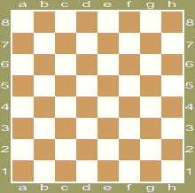
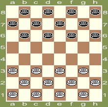
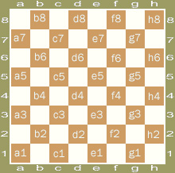
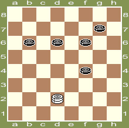

<!DOCTYPE html><html lang="en-US" prefix="og: https://ogp.me/ns#"><head>

	<meta http-equiv="Content-Type" content="text/html; charset=UTF-8">
	
	<link rel="stylesheet" href="css/llrVqv8ZJzzL.css" type="text/css" media="screen">
	<link rel="pingback" href="https://fmjd64.org/xmlrpc.php">

	
	
		<!-- All in One SEO 4.1.1 -->
		<title>Rules of the game | IDF | International Draughts Federation</title>
		<meta name="description" content="Official Rules of the game in draughts-64 1. The game and the players 1.1 Draughts is a mind sport between two players. 1.2 The people engaging this sport are defined as the players. 2. The material 2.1. Board 2.1.1. Draughts-64 are played on a square board, divided into 64 equal squares, alternately black and white. […]">
		<link rel="canonical" href="https://fmjd64.org/rules-of-the-game/">
		<meta property="og:site_name" content="IDF | International Draughts Federation | Official website of the Section 64 FMJD">
		<meta property="og:type" content="article">
		<meta property="og:title" content="Rules of the game | IDF | International Draughts Federation">
		<meta property="og:description" content="Official Rules of the game in draughts-64 1. The game and the players 1.1 Draughts is a mind sport between two players. 1.2 The people engaging this sport are defined as the players. 2. The material 2.1. Board 2.1.1. Draughts-64 are played on a square board, divided into 64 equal squares, alternately black and white. […]">
		<meta property="og:url" content="https://fmjd64.org/rules-of-the-game/">
		<meta property="article:published_time" content="2012-04-08T08:00:59Z">
		<meta property="article:modified_time" content="2012-04-10T22:08:22Z">
		<meta name="twitter:card" content="summary">
		<meta name="twitter:domain" content="fmjd64.org">
		<meta name="twitter:title" content="Rules of the game | IDF | International Draughts Federation">
		<meta name="twitter:description" content="Official Rules of the game in draughts-64 1. The game and the players 1.1 Draughts is a mind sport between two players. 1.2 The people engaging this sport are defined as the players. 2. The material 2.1. Board 2.1.1. Draughts-64 are played on a square board, divided into 64 equal squares, alternately black and white. […]">
		<meta name="google" content="nositelinkssearchbox">
		<script type="application/ld+json" class="aioseo-schema">
			{"@context":"https:\/\/schema.org","@graph":[{"@type":"WebSite","@id":"https:\/\/fmjd64.org\/#website","url":"https:\/\/fmjd64.org\/","name":"IDF | International Draughts Federation","description":"Official website of the Section 64 FMJD","publisher":{"@id":"https:\/\/fmjd64.org\/#organization"}},{"@type":"Organization","@id":"https:\/\/fmjd64.org\/#organization","name":"IDF | International Draughts Federation","url":"https:\/\/fmjd64.org\/"},{"@type":"BreadcrumbList","@id":"https:\/\/fmjd64.org\/rules-of-the-game\/#breadcrumblist","itemListElement":[{"@type":"ListItem","@id":"https:\/\/fmjd64.org\/#listItem","position":"1","item":{"@id":"https:\/\/fmjd64.org\/#item","name":"\u0413\u043b\u0430\u0432\u043d\u0430\u044f","description":"Official website of the Section 64 FMJD","url":"https:\/\/fmjd64.org\/"},"nextItem":"https:\/\/fmjd64.org\/rules-of-the-game\/#listItem"},{"@type":"ListItem","@id":"https:\/\/fmjd64.org\/rules-of-the-game\/#listItem","position":"2","item":{"@id":"https:\/\/fmjd64.org\/rules-of-the-game\/#item","name":"Rules of the game","description":"Official Rules of the game in draughts-64 1. The game and the players 1.1 Draughts is a mind sport between two players. 1.2 The people engaging this sport are defined as the players. 2. The material 2.1. Board 2.1.1. Draughts-64 are played on a square board, divided into 64 equal squares, alternately black and white. [\u2026]","url":"https:\/\/fmjd64.org\/rules-of-the-game\/"},"previousItem":"https:\/\/fmjd64.org\/#listItem"}]},{"@type":"WebPage","@id":"https:\/\/fmjd64.org\/rules-of-the-game\/#webpage","url":"https:\/\/fmjd64.org\/rules-of-the-game\/","name":"Rules of the game | IDF | International Draughts Federation","description":"Official Rules of the game in draughts-64 1. The game and the players 1.1 Draughts is a mind sport between two players. 1.2 The people engaging this sport are defined as the players. 2. The material 2.1. Board 2.1.1. Draughts-64 are played on a square board, divided into 64 equal squares, alternately black and white. [\u2026]","inLanguage":"en-US","isPartOf":{"@id":"https:\/\/fmjd64.org\/#website"},"breadcrumb":{"@id":"https:\/\/fmjd64.org\/rules-of-the-game\/#breadcrumblist"},"datePublished":"2012-04-08T08:00:59+04:00","dateModified":"2012-04-10T22:08:22+04:00"}]}
		</script>
		<!-- All in One SEO -->

<link rel="dns-prefetch" href="//cdnjs.cloudflare.com">
<link rel="dns-prefetch" href="//use.fontawesome.com">
<link rel="dns-prefetch" href="//s.w.org">
<link rel="alternate" type="application/rss+xml" title="IDF | International Draughts Federation � Feed" href="https://fmjd64.org/feed/">
<link rel="alternate" type="application/rss+xml" title="IDF | International Draughts Federation � Comments Feed" href="https://fmjd64.org/comments/feed/">
		<script type="text/javascript">
			window._wpemojiSettings = {"baseUrl":"https:\/\/s.w.org\/images\/core\/emoji\/13.0.1\/72x72\/","ext":".png","svgUrl":"https:\/\/s.w.org\/images\/core\/emoji\/13.0.1\/svg\/","svgExt":".svg","source":{"concatemoji":"https:\/\/fmjd64.org\/wp-includes\/js\/wp-emoji-release.min.js?ver=5.7.2"}};
			!function(e,a,t){var n,r,o,i=a.createElement("canvas"),p=i.getContext&&i.getContext("2d");function s(e,t){var a=String.fromCharCode;p.clearRect(0,0,i.width,i.height),p.fillText(a.apply(this,e),0,0);e=i.toDataURL();return p.clearRect(0,0,i.width,i.height),p.fillText(a.apply(this,t),0,0),e===i.toDataURL()}function c(e){var t=a.createElement("script");t.src=e,t.defer=t.type="text/javascript",a.getElementsByTagName("head")[0].appendChild(t)}for(o=Array("flag","emoji"),t.supports={everything:!0,everythingExceptFlag:!0},r=0;r<o.length;r++)t.supports[o[r]]=function(e){if(!p||!p.fillText)return!1;switch(p.textBaseline="top",p.font="600 32px Arial",e){case"flag":return s([127987,65039,8205,9895,65039],[127987,65039,8203,9895,65039])?!1:!s([55356,56826,55356,56819],[55356,56826,8203,55356,56819])&&!s([55356,57332,56128,56423,56128,56418,56128,56421,56128,56430,56128,56423,56128,56447],[55356,57332,8203,56128,56423,8203,56128,56418,8203,56128,56421,8203,56128,56430,8203,56128,56423,8203,56128,56447]);case"emoji":return!s([55357,56424,8205,55356,57212],[55357,56424,8203,55356,57212])}return!1}(o[r]),t.supports.everything=t.supports.everything&&t.supports[o[r]],"flag"!==o[r]&&(t.supports.everythingExceptFlag=t.supports.everythingExceptFlag&&t.supports[o[r]]);t.supports.everythingExceptFlag=t.supports.everythingExceptFlag&&!t.supports.flag,t.DOMReady=!1,t.readyCallback=function(){t.DOMReady=!0},t.supports.everything||(n=function(){t.readyCallback()},a.addEventListener?(a.addEventListener("DOMContentLoaded",n,!1),e.addEventListener("load",n,!1)):(e.attachEvent("onload",n),a.attachEvent("onreadystatechange",function(){"complete"===a.readyState&&t.readyCallback()})),(n=t.source||{}).concatemoji?c(n.concatemoji):n.wpemoji&&n.twemoji&&(c(n.twemoji),c(n.wpemoji)))}(window,document,window._wpemojiSettings);
		</script>
		<style type="text/css">
img.wp-smiley,
img.emoji {
	display: inline !important;
	border: none !important;
	box-shadow: none !important;
	height: 1em !important;
	width: 1em !important;
	margin: 0 .07em !important;
	vertical-align: -0.1em !important;
	background: none !important;
	padding: 0 !important;
}
</style>
	<link rel="stylesheet" id="wp-block-library-css" href="css/R8nusn3WXZID.css" type="text/css" media="all">
<link rel="stylesheet" id="nextgen_widgets_style-css" href="css/dPxuusRRvPbN.css" type="text/css" media="all">
<link rel="stylesheet" id="nextgen_basic_thumbnails_style-css" href="css/cReYxlFvrhmR.css" type="text/css" media="all">
<link rel="stylesheet" id="ngg_basic_slideshow_style-css" href="css/7cgirREVwQNJ.css" type="text/css" media="all">
<link rel="stylesheet" id="ngg_slick_slideshow_style-css" href="css/piZObRDKUAET.css" type="text/css" media="all">
<link rel="stylesheet" id="ngg_slick_slideshow_theme-css" href="css/lez0v5OuHYh7.css" type="text/css" media="all">
<link rel="stylesheet" id="ngg_trigger_buttons-css" href="css/tKtKiAqRVgv1.css" type="text/css" media="all">
<link rel="stylesheet" id="fancybox-0-css" href="css/WzMVLBhX2TQE.css" type="text/css" media="all">
<link rel="stylesheet" id="fontawesome_v4_shim_style-css" href="css/dJdMxiyDmsrc.css" type="text/css" media="all">
<link rel="stylesheet" id="fontawesome-css" href="css/P7JLwYh2X9UV.css" type="text/css" media="all">
<link rel="stylesheet" id="nextgen_basic_slideshow_style-css" href="css/7cgirREVwQNJ.css" type="text/css" media="all">
<link rel="stylesheet" id="nggallery-css" href="css/C5wyghKZSPi7.css" type="text/css" media="all">
<script type="text/javascript" src="js/XhMEMsJfRdnh.js" id="jquery-core-js"></script>
<script type="text/javascript" src="js/CejcIiJVmJTt.js" id="jquery-migrate-js"></script>
<script type="text/javascript" src="js/oo90TsEExDzF.js" id="nest-menu-arrow-js"></script>
<script type="text/javascript" src="js/0ZB0mrF0t0pZ.js" id="nest-menu-effect-fade-js"></script>
<script type="text/javascript" src="js/CiO0RqoeEqf3.js" id="ngg_slick-js"></script>
<script type="text/javascript" id="photocrati_ajax-js-extra">
/* <![CDATA[ */
var photocrati_ajax = {"url":"https:\/\/fmjd64.org\/index.php?photocrati_ajax=1","wp_home_url":"https:\/\/fmjd64.org","wp_site_url":"https:\/\/fmjd64.org","wp_root_url":"https:\/\/fmjd64.org","wp_plugins_url":"https:\/\/fmjd64.org\/wp-content\/plugins","wp_content_url":"https:\/\/fmjd64.org\/wp-content","wp_includes_url":"https:\/\/fmjd64.org\/wp-includes\/","ngg_param_slug":"nggallery"};
/* ]]> */
</script>
<script type="text/javascript" src="js/msMwClU68zui.js" id="photocrati_ajax-js"></script>
<script type="text/javascript" src="js/cm23pPvoQBWj.js" id="photocrati-nextgen_basic_slideshow-js"></script>
<script type="text/javascript" src="js/mPtoUWdP2xYA.js" id="fontawesome_v4_shim-js"></script>
<script type="text/javascript" defer="" crossorigin="anonymous" data-auto-replace-svg="false" data-keep-original-source="false" data-search-pseudo-elements="" src="js/2TnNRP8pGIcF.js" id="fontawesome-js"></script>
<link rel="https://api.w.org/" href="https://fmjd64.org/wp-json/"><link rel="alternate" type="application/json" href="https://fmjd64.org/wp-json/wp/v2/pages/470"><link rel="EditURI" type="application/rsd+xml" title="RSD" href="https://fmjd64.org/xmlrpc.php?rsd">
<link rel="wlwmanifest" type="application/wlwmanifest+xml" href="https://fmjd64.org/wp-includes/wlwmanifest.xml"> 
<meta name="generator" content="WordPress 5.7.2">
<link rel="shortlink" href="https://fmjd64.org/?p=470">
<link rel="alternate" type="application/json+oembed" href="https://fmjd64.org/wp-json/oembed/1.0/embed?url=https%3A%2F%2Ffmjd64.org%2Frules-of-the-game%2F">
<link rel="alternate" type="text/xml+oembed" href="https://fmjd64.org/wp-json/oembed/1.0/embed?url=https%3A%2F%2Ffmjd64.org%2Frules-of-the-game%2F&amp;format=xml">
<style type="text/css">
.qtranxs_flag_en {background-image: url(images/qYzMqt9a54Wm.png); background-repeat: no-repeat;}
.qtranxs_flag_ru {background-image: url(images/fMzoLJa40ToT.png); background-repeat: no-repeat;}
</style>
<link hreflang="en" href="https://fmjd64.org/en/rules-of-the-game/" rel="alternate">
<link hreflang="ru" href="https://fmjd64.org/ru/rules-of-the-game/" rel="alternate">
<link hreflang="x-default" href="https://fmjd64.org/rules-of-the-game/" rel="alternate">
<!--[if lt IE 9]><script src="http://html5shim.googlecode.com/svn/trunk/html5.js"></script><![endif]-->
</head>

<body class="page-template-default page page-id-470 sidebar-right">

<div id="page">

	<div id="header">

		<header id="header-inner" class="inner">

			<hgroup>
								<h1 class="site-title"><a href="https://fmjd64.org/">IDF | International Draughts Federation</a></h1>
				<h4 class="site-description">Official website of the Section 64 FMJD</h4>
							</hgroup>

		</header><!-- #header-inner -->

	</div><!-- #header -->

	<div id="nav">

		<nav id="nav-inner" class="inner">

			<div class="menu-main-container"><ul id="menu-main" class="menu"><li id="menu-item-136" class="menu-item menu-item-type-taxonomy menu-item-object-category menu-item-136"><a href="https://fmjd64.org/category/news/">Current news</a></li>
<li id="menu-item-7" class="menu-item menu-item-type-custom menu-item-object-custom menu-item-has-children menu-item-7"><a href="#">Official info</a>
<ul class="sub-menu">
	<li id="menu-item-8" class="menu-item menu-item-type-custom menu-item-object-custom menu-item-has-children menu-item-8"><a href="#">About us</a>
	<ul class="sub-menu">
		<li id="menu-item-170" class="menu-item menu-item-type-post_type menu-item-object-page menu-item-170"><a href="https://fmjd64.org/a-history-of-draughts/">History</a></li>
		<li id="menu-item-141" class="menu-item menu-item-type-post_type menu-item-object-page menu-item-141"><a href="https://fmjd64.org/section-64/">Section 64</a></li>
		<li id="menu-item-2529" class="menu-item menu-item-type-post_type menu-item-object-page menu-item-2529"><a href="https://fmjd64.org/idf/">IDF</a></li>
	</ul>
</li>
	<li id="menu-item-11" class="menu-item menu-item-type-custom menu-item-object-custom menu-item-has-children menu-item-11"><a href="#">Our champions</a>
	<ul class="sub-menu">
		<li id="menu-item-175" class="menu-item menu-item-type-post_type menu-item-object-page menu-item-175"><a href="https://fmjd64.org/world-cup-in-draughts-64/">World cup</a></li>
		<li id="menu-item-197" class="menu-item menu-item-type-custom menu-item-object-custom menu-item-has-children menu-item-197"><a href="#">World</a>
		<ul class="sub-menu">
			<li id="menu-item-186" class="menu-item menu-item-type-post_type menu-item-object-page menu-item-186"><a href="https://fmjd64.org/world-men-championship/">Men</a></li>
			<li id="menu-item-195" class="menu-item menu-item-type-post_type menu-item-object-page menu-item-195"><a href="https://fmjd64.org/world-women-championship/">Women</a></li>
			<li id="menu-item-196" class="menu-item menu-item-type-post_type menu-item-object-page menu-item-196"><a href="https://fmjd64.org/prize-winners-of-world-team-championships/">Teams</a></li>
			<li id="menu-item-4275" class="menu-item menu-item-type-post_type menu-item-object-page menu-item-4275"><a href="https://fmjd64.org/youth-championship-23-year-and-younger-men-2/">Juniors B23</a></li>
			<li id="menu-item-4274" class="menu-item menu-item-type-post_type menu-item-object-page menu-item-4274"><a href="https://fmjd64.org/youth-championship-23-year-and-younger-women-2/">Juniors G23</a></li>
			<li id="menu-item-179" class="menu-item menu-item-type-post_type menu-item-object-page menu-item-179"><a href="https://fmjd64.org/world-champions-among-boys-and-girls/">Boys and girls</a></li>
		</ul>
</li>
		<li id="menu-item-198" class="menu-item menu-item-type-custom menu-item-object-custom menu-item-has-children menu-item-198"><a href="#">Europe</a>
		<ul class="sub-menu">
			<li id="menu-item-2055" class="menu-item menu-item-type-post_type menu-item-object-page menu-item-2055"><a href="https://fmjd64.org/men-championship/">Men</a></li>
			<li id="menu-item-2054" class="menu-item menu-item-type-post_type menu-item-object-page menu-item-2054"><a href="https://fmjd64.org/women-championship/">Women</a></li>
			<li id="menu-item-2074" class="menu-item menu-item-type-post_type menu-item-object-page menu-item-2074"><a href="https://fmjd64.org/youth-championship-23-year-and-younger-men/">Juniors B23</a></li>
			<li id="menu-item-2073" class="menu-item menu-item-type-post_type menu-item-object-page menu-item-2073"><a href="https://fmjd64.org/youth-championship-23-year-and-younger-women/">Juniors G23</a></li>
			<li id="menu-item-1641" class="menu-item menu-item-type-post_type menu-item-object-page menu-item-1641"><a href="https://fmjd64.org/european-champions-boys-and-girls/">Boys and girls</a></li>
			<li id="menu-item-2080" class="menu-item menu-item-type-post_type menu-item-object-page menu-item-2080"><a href="https://fmjd64.org/veterans-championships/">Veterans</a></li>
		</ul>
</li>
	</ul>
</li>
	<li id="menu-item-32" class="menu-item menu-item-type-custom menu-item-object-custom menu-item-has-children menu-item-32"><a href="#">Titles</a>
	<ul class="sub-menu">
		<li id="menu-item-33" class="menu-item menu-item-type-custom menu-item-object-custom menu-item-has-children menu-item-33"><a href="#">Players</a>
		<ul class="sub-menu">
			<li id="menu-item-159" class="menu-item menu-item-type-post_type menu-item-object-page menu-item-159"><a href="https://fmjd64.org/players-with-international-titles-men/">Men</a></li>
			<li id="menu-item-162" class="menu-item menu-item-type-post_type menu-item-object-page menu-item-162"><a href="https://fmjd64.org/players-with-international-titles-women/">Women</a></li>
		</ul>
</li>
		<li id="menu-item-2778" class="menu-item menu-item-type-post_type menu-item-object-page menu-item-2778"><a href="https://fmjd64.org/arbitters/">Arbiters</a></li>
	</ul>
</li>
	<li id="menu-item-142" class="menu-item menu-item-type-post_type menu-item-object-page menu-item-142"><a href="https://fmjd64.org/executive-board/">Official</a></li>
	<li id="menu-item-3449" class="menu-item menu-item-type-post_type menu-item-object-page menu-item-3449"><a href="https://fmjd64.org/statutes/">Statutes</a></li>
	<li id="menu-item-4542" class="menu-item menu-item-type-post_type menu-item-object-page menu-item-4542"><a href="https://fmjd64.org/minutes-and-reports/">Minutes and reports</a></li>
	<li id="menu-item-613" class="menu-item menu-item-type-post_type menu-item-object-page menu-item-613"><a href="https://fmjd64.org/contacts/">Contacts</a></li>
</ul>
</li>
<li id="menu-item-14" class="menu-item menu-item-type-custom menu-item-object-custom current-menu-ancestor current-menu-parent menu-item-has-children menu-item-14"><a href="#">Documents</a>
<ul class="sub-menu">
	<li id="menu-item-512" class="menu-item menu-item-type-post_type menu-item-object-page current-menu-item page_item page-item-470 current_page_item menu-item-512"><a href="https://fmjd64.org/rules-of-the-game/" aria-current="page">Rules of the game</a></li>
	<li id="menu-item-137" class="menu-item menu-item-type-post_type menu-item-object-page menu-item-137"><a href="https://fmjd64.org/rules-of-official-fmjd-competitions-in-draughts-64/">Rules of competitions</a></li>
	<li id="menu-item-17" class="menu-item menu-item-type-custom menu-item-object-custom menu-item-17"><a href="https://fmjd64.org/wp-content/uploads/2012/02/debut2012.doc">Table of draw</a></li>
	<li id="menu-item-1798" class="menu-item menu-item-type-post_type menu-item-object-page menu-item-1798"><a href="https://fmjd64.org/conditions-of-competitions/">For organizers</a></li>
	<li id="menu-item-22" class="menu-item menu-item-type-custom menu-item-object-custom menu-item-has-children menu-item-22"><a href="#">For referees</a>
	<ul class="sub-menu">
		<li id="menu-item-23" class="menu-item menu-item-type-custom menu-item-object-custom menu-item-23"><a href="https://fmjd64.org/wp-content/uploads/2012/02/General_Referee_report.doc">General referee report</a></li>
		<li id="menu-item-24" class="menu-item menu-item-type-custom menu-item-object-custom menu-item-24"><a href="https://fmjd64.org/wp-content/uploads/2012/02/Special_Referee_report.doc">Special referee report</a></li>
		<li id="menu-item-212" class="menu-item menu-item-type-custom menu-item-object-custom menu-item-212"><a href="https://fmjd64.org/wp-content/uploads/2012/02/Informational_letter_engl.doc">Informational letter</a></li>
	</ul>
</li>
	<li id="menu-item-18" class="menu-item menu-item-type-custom menu-item-object-custom menu-item-has-children menu-item-18"><a href="#">Rules of attribution of international titles</a>
	<ul class="sub-menu">
		<li id="menu-item-236" class="menu-item menu-item-type-custom menu-item-object-custom menu-item-236"><a href="https://fmjd64.org/wp-content/uploads/2015/02/Annex-10-norms-and-titles-19-02-2014.pdf">Annex 10 norms and titles</a></li>
		<li id="menu-item-237" class="menu-item menu-item-type-custom menu-item-object-custom menu-item-237"><a href="https://fmjd64.org/wp-content/uploads/2012/02/FMJD_procedure_for_Selection_and_nomination_of_international_referees.doc">FMJD procedure for Selection and nomination of international referees</a></li>
		<li id="menu-item-238" class="menu-item menu-item-type-custom menu-item-object-custom menu-item-238"><a href="https://fmjd64.org/wp-content/uploads/2012/02/Request_form_for_the_title_of_International_or_FMJD_referee.doc">Request form for the title of International or FMJD referee</a></li>
	</ul>
</li>
</ul>
</li>
<li id="menu-item-27" class="menu-item menu-item-type-custom menu-item-object-custom menu-item-has-children menu-item-27"><a href="#">Events</a>
<ul class="sub-menu">
	<li id="menu-item-28" class="menu-item menu-item-type-custom menu-item-object-custom menu-item-has-children menu-item-28"><a href="#">Calendar</a>
	<ul class="sub-menu">
		<li id="menu-item-139" class="menu-item menu-item-type-post_type menu-item-object-page menu-item-139"><a href="https://fmjd64.org/calendar-of-the-section-64-official-events-in-2010-2014/">Calendar of events for 2015-2018</a></li>
		<li id="menu-item-140" class="menu-item menu-item-type-post_type menu-item-object-page menu-item-140"><a href="https://fmjd64.org/calendar-of-the-section-64-competitions-in-2012/">Calendar 2012</a></li>
		<li id="menu-item-1759" class="menu-item menu-item-type-post_type menu-item-object-page menu-item-1759"><a href="https://fmjd64.org/calendar_2013/">Calendar 2013</a></li>
		<li id="menu-item-4262" class="menu-item menu-item-type-post_type menu-item-object-page menu-item-4262"><a href="https://fmjd64.org/calendar-2014/">Calendar 2014</a></li>
		<li id="menu-item-6635" class="menu-item menu-item-type-post_type menu-item-object-page menu-item-6635"><a href="https://fmjd64.org/calendar-2015/">Calendar 2015</a></li>
		<li id="menu-item-8513" class="menu-item menu-item-type-post_type menu-item-object-page menu-item-8513"><a href="https://fmjd64.org/calendar-2016/">Calendar 2016</a></li>
	</ul>
</li>
	<li id="menu-item-1691" class="menu-item menu-item-type-post_type menu-item-object-page menu-item-1691"><a href="https://fmjd64.org/results/">Results</a></li>
	<li id="menu-item-2556" class="menu-item menu-item-type-custom menu-item-object-custom menu-item-home menu-item-has-children menu-item-2556"><a href="https://fmjd64.org/">World Cup</a>
	<ul class="sub-menu">
		<li id="menu-item-31" class="menu-item menu-item-type-custom menu-item-object-custom menu-item-has-children menu-item-31"><a href="#">2012</a>
		<ul class="sub-menu">
			<li id="menu-item-152" class="menu-item menu-item-type-post_type menu-item-object-page menu-item-152"><a href="https://fmjd64.org/regulations-of-the-world-cup-in-2012/">Regulations</a></li>
			<li id="menu-item-389" class="menu-item menu-item-type-post_type menu-item-object-page menu-item-389"><a href="https://fmjd64.org/standing-of-world-cup-2012/">Final standing</a></li>
		</ul>
</li>
		<li id="menu-item-2557" class="menu-item menu-item-type-custom menu-item-object-custom menu-item-home menu-item-has-children menu-item-2557"><a href="https://fmjd64.org/">2013</a>
		<ul class="sub-menu">
			<li id="menu-item-2558" class="menu-item menu-item-type-post_type menu-item-object-page menu-item-2558"><a href="https://fmjd64.org/regulations-world-cup-2013/">Regulations</a></li>
			<li id="menu-item-3477" class="menu-item menu-item-type-post_type menu-item-object-page menu-item-3477"><a href="https://fmjd64.org/standing-after-2-stages/">Final standing</a></li>
		</ul>
</li>
		<li id="menu-item-4450" class="menu-item menu-item-type-custom menu-item-object-custom menu-item-home menu-item-has-children menu-item-4450"><a href="https://fmjd64.org/">2014</a>
		<ul class="sub-menu">
			<li id="menu-item-4448" class="menu-item menu-item-type-post_type menu-item-object-page menu-item-4448"><a href="https://fmjd64.org/regulations/">Regulations</a></li>
			<li id="menu-item-6314" class="menu-item menu-item-type-post_type menu-item-object-page menu-item-6314"><a href="https://fmjd64.org/standing/">Final standing</a></li>
		</ul>
</li>
		<li id="menu-item-7200" class="menu-item menu-item-type-custom menu-item-object-custom menu-item-home menu-item-has-children menu-item-7200"><a href="https://fmjd64.org/">2015</a>
		<ul class="sub-menu">
			<li id="menu-item-7205" class="menu-item menu-item-type-post_type menu-item-object-page menu-item-7205"><a href="https://fmjd64.org/regulations-2/">Regulations</a></li>
			<li id="menu-item-8092" class="menu-item menu-item-type-post_type menu-item-object-page menu-item-8092"><a href="https://fmjd64.org/standing-2/">Final standing</a></li>
		</ul>
</li>
		<li id="menu-item-8872" class="menu-item menu-item-type-custom menu-item-object-custom menu-item-home menu-item-has-children menu-item-8872"><a href="https://fmjd64.org/">2016</a>
		<ul class="sub-menu">
			<li id="menu-item-8873" class="menu-item menu-item-type-post_type menu-item-object-page menu-item-8873"><a href="https://fmjd64.org/regulations-3/">Regulations</a></li>
		</ul>
</li>
	</ul>
</li>
</ul>
</li>
<li id="menu-item-138" class="menu-item menu-item-type-post_type menu-item-object-page menu-item-138"><a href="https://fmjd64.org/ratings/">Ratings</a></li>
<li id="menu-item-2450" class="menu-item menu-item-type-custom menu-item-object-custom menu-item-has-children menu-item-2450"><a href="#">Media</a>
<ul class="sub-menu">
	<li id="menu-item-2453" class="menu-item menu-item-type-post_type menu-item-object-page menu-item-2453"><a href="https://fmjd64.org/photo/">Photo</a></li>
	<li id="menu-item-2454" class="menu-item menu-item-type-post_type menu-item-object-page menu-item-2454"><a href="https://fmjd64.org/video/">Video</a></li>
	<li id="menu-item-8237" class="menu-item menu-item-type-post_type menu-item-object-page menu-item-8237"><a href="https://fmjd64.org/publications/">Publications</a></li>
	<li id="menu-item-149" class="menu-item menu-item-type-post_type menu-item-object-page menu-item-149"><a href="https://fmjd64.org/web-links/">Web links</a></li>
</ul>
</li>
<li id="menu-item-43" class="menu-item menu-item-type-custom menu-item-object-custom menu-item-has-children menu-item-43"><a href="#">Archive</a>
<ul class="sub-menu">
	<li id="menu-item-2322" class="menu-item menu-item-type-post_type menu-item-object-page menu-item-2322"><a href="https://fmjd64.org/calendar/">Calendar</a></li>
	<li id="menu-item-1678" class="menu-item menu-item-type-post_type menu-item-object-page menu-item-1678"><a href="https://fmjd64.org/table/">Tables</a></li>
	<li id="menu-item-1709" class="menu-item menu-item-type-post_type menu-item-object-page menu-item-1709"><a href="https://fmjd64.org/parties/">Games</a></li>
	<li id="menu-item-2597" class="menu-item menu-item-type-post_type menu-item-object-page menu-item-2597"><a href="https://fmjd64.org/ratings-2/">Ratings</a></li>
</ul>
</li>
</ul></div>
			<div id="nav-sns">
								<a class="btn-sns btn-facebook" href="https://fb.com/idf64" target="_blank" rel="nofollow">Facebook</a>								<a class="btn-sns btn-sns-rss" href="https://fmjd64.org/feed/" target="_blank">RSS</a>
			</div>

		</nav><!-- #nav-inner -->

	</div><!-- #nav -->

	<div id="main">

		<div id="content" class="inner">

<section id="primary">


	<article class="post-470 page type-page status-publish hentry" id="post-470">

		<hgroup class="post-header">

			<h2 class="post-title">
			Rules of the game	</h2>

			
		</hgroup>

		<div class="post-entry">
						<h2 style="text-align: center;">Official Rules of the game in draughts-64�&nbsp;</h2>
<p>�&nbsp;<strong>1.�&nbsp;�&nbsp;�&nbsp;�&nbsp; </strong><strong>The game and the players</strong></p>
<p>1.1�&nbsp; Draughts is a mind sport between two players.<br>
1.2�&nbsp; The people engaging this sport are defined as the players.</p>
<p><strong>2.�&nbsp;�&nbsp;�&nbsp;�&nbsp; </strong><strong>The material</strong></p>
<p><strong>�&nbsp;</strong><strong>2.1. Board </strong></p>
<p>2.1.1. Draughts-64 are played on a square board, divided into 64 equal squares, alternately black and white. This board is a draughts board.�&nbsp;2.1.2. The game is played on the dark squares of the board. Thus, 32 squares are active.</p>
<p><a href="https://fmjd64.org/wp-content/uploads/2012/04/1.jpg"></a></p>
<p>Diagram 1</p>
<p>2.1.3. The skewed lines formed by the dark squares are the diagonals. The longest diagonal, which joins two corners of the board and comprises 8 squares, is called the long diagonal.</p>
<p>2.1.4. The board has to be placed between the two players in such a way that the long diagonal starts at the left hand side of each player. This way, the first square at the left hand for each player is a dark square.</p>
<p>2.1.5. Thus positioned between the players, the board features the following items:<br>
2.1.5.1. Bases: the side of the board facing each player;<br>
2.1.5.2. Sides: the squares at the side of the board, thus the first and/or the last column;<br>
2.1.5.3. Rows: horizontal lines with 4 dark squares;<br>
2.1.5.4. Columns: vertical lines with 4 dark squares.</p>
<p><strong>�&nbsp;</strong><strong>2.2. Pieces.</strong></p>
<p>2.2. 1. Draughts-64 is played with 12 white or light colored men, and 12 black or dark colored men.�&nbsp;</p>
<p><a href="https://fmjd64.org/wp-content/uploads/2012/04/2.jpg"></a></p>
<p>Diagram 2</p>
<p>2.2.2. At the start of the game, the 12 white men are put on the dark squares of �&nbsp;the 1, 2, 3 horizontal rows�&nbsp; and the 12 black men are put on the dark squares of�&nbsp; the�&nbsp; 6, 7, 8 horizontal rows (Diagram 2). �&nbsp;Horizontal rows 4, 5 are free.</p>
<p>�&nbsp;<strong>3.�&nbsp;�&nbsp;�&nbsp;�&nbsp; </strong><strong>The movement of the piece</strong></p>
<p>�&nbsp;3.1. A piece can be either a man or a king.</p>
<p>3.2. A man and a king have different ways of moving and capturing. The movement of one piece, either a man or a king, is called a “move”.</p>
<p>3.3. The first move of a game is always for the player with the white men. The players play one move, each one at his turn, with their own pieces.</p>
<p>3.4. Each move must be done with only one hand.<strong></strong></p>
<p>3.5. A man has to move, forwards over a diagonal, towards an empty square of the next row.</p>
<p>3.6: A king is a man, which reaches and stops at one of the squares of the last line nearest to his adversary, and is crowned with a man of the same colour.</p>
<p>3.7 : When a player reaches the last eighth (counting from himself) �&nbsp;line both players may crown the man which stops at the last eighth (counting from himself) line. However if the opponent does not do this it is the obligation of the player to crown his man as part of his move. Not crowning a man promoted to King is considered an irregular move. In cases stipulated by the regulations of competitions, a king may be denoted by an inversion of man.</p>
<p>3.8. A king moves forwards and backwards over the successive free squares of the diagonal he occupies; thus he can come to rest, passing over free squares, on a distant free square.</p>
<p>3.9. The move of a piece is finished when the player has released the piece after moving it.</p>
<p>3.10. Whenever a player, who has the move, touches one of his playable pieces, he has to play with that piece, provided a legal move is possible.</p>
<p>3.11. As long as a piece during a move has not been released, the player can put it on another free square, if that is possible.</p>
<p>3.12. The player who has the move and wishes to place his men more neatly on the squares, has to announce beforehand and clearly to his opponent, stating “I adjust” (or “corrected”)</p>
<p>3.13. It is considered incorrect, when a player who does not have the move, touches or adjusts one or more of his men or of his opponent.</p>
<p>�&nbsp;<strong>4.�&nbsp;�&nbsp;�&nbsp;�&nbsp; </strong><strong>The capture</strong></p>
<p>�&nbsp;4.1. Capturing a piece of the opponent can be done both forwards and backwards. A capture counts as one complete move. One cannot capture one’s own pieces.</p>
<p>4.2. Whenever a man meets, diagonally, a piece of the opponent behind which is a free square, he is obliged to jump over the opponent’s piece and occupy that free square. That particular piece of the opponent is taken from the board. This total operation is the capture by a man.</p>
<p>4.3. When a king encounters, on the same diagonal, either close or in the distance, a piece of the opponent behind which one or more squares are empty, he is obliged to jump over it and occupy a free square by choice.�&nbsp; This total operation is the capture by a king.</p>
<p>4.4. A capture has to be clearly indicated and executed in this order. Absence of a clear indication is incorrect, and rectification can be requested by the opponent. The capture is considered finished when all the opponent’s captured pieces have been lifted from the board.</p>
<p>It is obligatory to make the move and take the captured pieces from the board with one and the same hand.�&nbsp; Using two hands for making the move and taking the captured pieces is incorrect, and rectification can be requested by the opponent.</p>
<p>4.5. When in the course of a capture, a man meets, diagonally, another piece of the opponent behind which is an empty square, he is obliged to jump that second piece too, even a third piece and so on, and occupy the empty square behind the last piece taken. The captured pieces are then lifted from the board, in the ascending or descending order of the capture. This total operation is a multiple capture by a man.</p>
<p>4.6. Whenever a king, during a capture, meets, either on the same diagonal or on one of the perpendicular diagonals, a piece of the opponent behind which are one or more empty squares, he is obliged to pass over that second piece, if needed turning a corner towards the piece that can be taken, even a third, and so on, and finally occupy one square by choice behind the last piece captured on the same diagonal. The captured pieces of the opponent are then lifted from the board, in the ascending or descending order of the capture. This total operation is a multiple capture by a king.</p>
<p>4.7. In the course of a multiple capture, it is forbidden to jump over one’s own pieces.</p>
<p>4.8. In the course of a multiple capture, it is permitted to pass over the same empty square more than once, but it is forbidden to pass over the same piece of the opponent more than once.</p>
<p>4.9. A multiple capture has to be indicated clearly, putting the capturing piece down on the empty square after each jump and putting that piece on the final square. Absence of a clear indication is incorrect, and rectification can be requested by the opponent.</p>
<p>4.10. The move of a piece during a multiple capture is considered finished when the player has released his capturing piece after or during the course of the move.</p>
<p>4.11. The opponent’s pieces can only be lifted from the board after the completion of the multiple capture. The pieces are taken from the board after the move itself, and in the ascending or descending order of the capture, without stops in between. Taking the pieces in another order or without order is considered incorrect and rectification can be requested by the opponent.</p>
<p>4.12. The taking of the pieces from the board is considered finished, when the player has taken all captured pieces or when he has clearly stopped during this operation.</p>
<p>4.13. If there is a possibility of capture on two or more directions of a king or men, a player has a choice capture, regardless of the number or quality of pieces (Kings, or men).</p>
<p>4.14. If a man is captured on the last (eighth from himself) horizontal line and have opportunity to further capture, it must continue the capture, but as king.</p>
<p>4.15. If a man reaches the last horizontal row without capture, it becomes a king, is stopping on the last row and can to capture at the next move only.</p>
<p>�&nbsp;<strong>4.16. The difference in the rules of capture in the Brazilian version of draughts-64.<br>
</strong>4.16.1. Capture of the greatest number of pieces is required. If you have a choice of kings or men, then you can to capture any of them, respecting the rule of the capture the largest number of pieces, regardless of their quality.</p>
<p>4.16.2. If a man reaches the last (eighth from himself) horizontal line when it is captured pieces and it have the opportunity to continue capture pieces, it is obliged to continue capture the same course, and remain man at the same time.</p>
<p><strong></strong>4.16.3. If a man reaches the last (eighth from himself) horizontal line and has the opportunity to continue capture the pieces, as a king, then it becomes a king, stopping on the last row, and can to capture at the next move only, if it is still possible.</p>
<p>�&nbsp;<strong>5.�&nbsp;�&nbsp;�&nbsp;�&nbsp; </strong><strong>Irregularities</strong></p>
<p>�&nbsp;5.1. If during a game revealed that board is wrong regarding article 2.1.4., the game is annulled and replayed.</p>
<p>5.2. Compliance with article 2.2.2 has to be checked before the start of the game. For each irregularity noted during the game, article 5.4. below holds.</p>
<p>5.3. If a player will moved randomly one or more of his pieces or opponent pieces on the board in the game he must restore the correct position on own time. A referee may punish a player who moved pieces.</p>
<p>5.4. If a player has committed one of the following irregularities, his opponent has the right to decide whether that irregularity must be rectified, or on the contrary, must be allowed to stand.<br>
5.4.1. Playing two moves consecutively;<br>
5.4.2. Moving a man or a king in an irregular way;<br>
5.4.3. Touching one of one’s pieces and then moving another one;<br>
5.4.4. Taking back a move played;<br>
5.4.5. Moving a piece of the opponent;<br>
5.4.6. Playing a piece when a capture is possible;<br>
5.4.7. Taking without reason one of the pieces from the board, either of the opponent or one’s own;<br>
5.4.8. Capture by a piece, of less or more than the number of possible pieces to capture;<br>
5.4.9. Stopping during a multiple capture (released piece, see article 4.10);<br>
5.4.10. Irregularly lifting a piece, during an unfinished multiple capture.<br>
5.4.11. Taking, after a multiple capture, less pieces from the board, than captured;<br>
5.4.12. Taking, after a capture, pieces that have not been jumped.<br>
5.4.13. Stopping, during a multiple capture, in taking the pieces;<br>
5.4.14. Taking, after a capture, one or more of one’s own pieces.<br>
5.4.15. Promoting a man to King without crowning him.<br>
5.4.16. Playing with a King which is not yet crowned.<br>
5.4.17. Using two hands for making the move and taking the captured pieces.</p>
<p>�&nbsp;5.5. Situations have arisen on the board for reasons beyond the control of the players are not considered irregularity.</p>
<p>5.6. If a player refuses to comply with the Official Game Rules, his opponent has the right to force his compliance.</p>
<p>5.7. If a player makes a move after his opponent has committed an irregularity or has refused to comply with the Official Game Rules, his move indicates an acceptance of the situation. Then a rectification can no longer be obtained.</p>
<p>5.8. A partial rectification of an irregularity or a refusal cannot be tolerated.</p>
<p>5.9. The referee has the right to punish the player who committed the irregularity.</p>
<p>�&nbsp;<strong>6.�&nbsp;�&nbsp;�&nbsp;�&nbsp; </strong><strong>The result</strong></p>
<p>There are two possible results at the end of a game:<br>
�&nbsp; A win for one of the opponents, and, by consequence, a loss for the other;<br>
�&nbsp; A draw when neither of the players has been able to win.</p>
<p>6.1. A player <strong>wins</strong> when his opponent:<br>
6.1.1. resigns with or without reason;<br>
6.1.2. has the move but cannot move a piece, as all are blocked;<br>
6.1.3. has no pieces left;<br>
6.1.4. refuses to comply with the rules.</p>
<p>6.2. A <strong>draw</strong> is obtained when:<br>
6.2.1. both players agree to a draw by mutual consent;<br>
6.2.2. the rules for draws in article 6 apply;<br>
6.2.3. neither player can win.</p>
<p>�&nbsp;7. <strong>The draw</strong></p>
<p>The game is drawn in the following cases:</p>
<p>7.2.1. If one player proposes a draw and his opponent accepts the offer.</p>
<p>7.2.2. If any of the opponents cannot win.</p>
<p>7.2.3. If three (or more) times the same position is repeated, and each time the same player having to move.</p>
<p>7.2.4. If a player has in the party three kings (and more) against a single enemy king and his 15th move (counting from the time of establishing the correlation of forces) cannot capture enemy king.</p>
<p>7.2.5. If within 15 moves the players made ​​moves only kings without moving of men and not making the capture.</p>
<p>7.2.6. If the position in which the both opponents having kings have not changed the balance of pieces (ie, there was no capture and man did not become a king) for:<br>
 To 4-and 5-pieces endings  30 moves;<br>
 In 6, and 7-pieces endings  60 moves.</p>
<p>7.2.7. If a player having in the party three kings, two kings and one man, one king and two men against one enemy king, located on the long diagonal, his 5th move will not be able to achieve a winning position.</p>
<p>7.2.8. If a player having in the party two kings, one king and man, one king against enemy king to their 5th move will not be able to achieve a winning position.�&nbsp;<br>
�&nbsp;<br>
7.2.9. In the case of time control before the end of the party without the addition of Fisher seconds per move positions: three kings, two kings plus man or a king and two men, against one enemy king, located on the long diagonal; two kings, one king and a man, or one king against one enemy king, do not play, just recorded a draw, excluding case when the game is obvious and the player can continue to demonstrate the victory.</p>
<p>7.2.10. End of the game, as described in Articles 7.2.7., 7.2.8, 7.2.9. is called a regulation draw.</p>
<ol start="8">
<li><strong>Notation</strong></li>
</ol>
<p><strong><a href="https://fmjd64.org/wp-content/uploads/2012/04/3.jpg"></a></strong></p>
<p>Diagram 3</p>
<p>8.1. Notation is a system of symbols of board fields.</p>
<p>8.2. Eight boards horizontal rows denote by numbers from 1 to 8, eight vertical columns  small Latin letters from a through h (a, b, c, d, e, f, g, h). The letter a is denoted by the leftmost vertical column from player which plays white (the rightmost vertical line from player which plays black). The first horizontal row is the line closest to player which plays white.</p>
<p>8.3. Each field by the board denote depending on which vertical and horizontal it is located, ie each field is denoted by a combination of letters and numbers showing the vertical and horizontal rows, which are located at the intersection of the field.</p>
<p>8.4. Notation makes possible to record a whole party and some positions. For example, the location of pieces at the beginning of the party (Diagram 3) can be written as follows: white  a1, a3, b2, c1, c3, d2, e1, e3, f2, g1, g3, h2 (12) black  a7, b6, b8, c7, d6, d8, e7, f6, f8, g7, h6, h8 (12).</p>
<p>8.5. The record of the moves has to follow the following rules:</p>
<p>8.5.1. The name of the starting square, followed by the arrival square, for example, a3-b4;<br>
8.5.2. The two names may be separated by a hyphen (-) in the case of a simple move;<br>
8.5.3. The two names may be separated by a colon ( : ) in case of a capture.<br>
8.5.4. If the capture a few pieces in one move is need, the record of capture is as follows: first write the field from which the capture is beginning, and then a colon and the designated field, for which man (king) got after the capture.<br>
8.5.5. If it is necessary to note the direction of the capture, after the field that started the capture, consistently record the designation of the fields on which the change in direction was done with a colon between the designations of the fields.</p>
<p><a href="https://fmjd64.org/wp-content/uploads/2012/04/4.jpg"></a></p>
<p>Diagram 4</p>
<p>For example, in the position shown in Diagram 4, there are three directions of capture, and they are written as follows:�&nbsp;</p>
<p>1. d2:h6:f8:c5:a7<br>
2. d2:g5:e7:c5:a7<br>
3. d2:g5:d8:а5</p>
<p>In these positions should be done a complete record in the form, as indicated above.�&nbsp;</p>
<ol start="9">
<li><strong>Conventional signs</strong>.</li>
</ol>
<p>9.1. For clarity’s sake, the conventional signs used are the following:<br>
9.1.1. to indicate a move:  ;<br>
9.1.2. to indicate a capture: : ;<br>
9.1.3. to qualify a strong move: ! ;<br>
9.1.4. to qualify a very strong move: !! ;<br>
9.1.5. to qualify a weak move: ? ;<br>
9.1.6. to qualify a very weak move: ?? ;<br>
9.1.7. to indicate a move that seems to be weak but in fact turns out to be strong: ?! ;<br>
9.1.8. to indicate a move that seems to be strong but in fact turns out to be weak: !? ;<br>
9.1.9. a forced move, with any other move resulting in a loss: * ;<br>
9.1.10. to indicate a win: + ;<br>
9.1.11. to indicate a draw: = ;</p>
<ol start="10">
<li><strong>Using of playing clock</strong></li>
</ol>
<p>10.1. It may be arranged for a game that each player has to play a certain number of moves in a given time.</p>
<p>10.2. In that case it is obligatory for all players:<br>
10.2.1. To use a playing clock<br>
10.2.2. To transcribe the whole game move by move.</p>
<p>10.3. It may be arranged for a game that each player has a certain time till the end of the game. In that case, it is obligatory to use a playing clock without the obligation to record the moves.</p>
<p>10.4. The description and the rules of use for the clock are treated in the Rules for Competitions.</p>
<p>&nbsp;</p>
<h2>Rules�&nbsp;of the Rapid and Blitz games</h2>
<p>�&nbsp;<strong>1. Definition</strong></p>
<p>A game is considered <strong>accelerated</strong> when the time that is allowed for each player for the whole game is not more than 30 minutes.</p>
<p>There are two categories of accelerated games.</p>
<p>A. The <strong>rapid</strong> game, where each player is allowed a time between 10 and 30 minutes inclusive for the whole party, or when electronic clocks and the Fischer system are used between 10 and 15 minutes with additional seconds per each move.</p>
<p>B. The <strong>blitz</strong> game, where each player is allowed a time between 3 and 5 minutes inclusive for the whole party, or when electronic clocks and the Fischer system are used between 3 and 5 minutes with additional seconds per each move.</p>
<p>Apart from the exceptions given below in this Rules, the normal regulations hold.</p>
<p><strong>2. Tie breaking </strong></p>
<p>If tie breaking involves playing decisive games, these must be at the same rate of play or faster than those of the competition.</p>
<p>�&nbsp;<strong>3. Recording Games and Use of Clocks </strong></p>
<p>Recording games is optional, but the use of clocks is obligatory.</p>
<p>For official FMJD tournaments the use of electronic clocks and the Fischer system is obligatory.</p>
<p><strong>4. The draw</strong></p>
<p>When the players do not record the games the 20 moves rule is not valid. The players may agree upon a draw only if the number of men for each player is 6 or less.</p>
<p>�&nbsp;<strong>5. Rights of the players</strong></p>
<p>Any player who wishes to claim a regulatory draw <strong>(see Rules of the game, item 7)</strong> may do so. The referee will decide if the claim is correct and if so he will end the game.</p>
<p>The following articles are only valid when not using electronic clocks with the Fischer System, but only using a given time for the whole game.</p>
<p><strong>�&nbsp;</strong><strong>6. Regulation draw</strong></p>
<p>During rapid or blitz games, if only three kings remain, two king plus a man, or one king and two men, against one king on long diagonal, or only two kings remain, one king and a man, or one king against one king the game shall be considered a draw, excluding case when the game is obvious and the player can continue to demonstrate the victory.</p>
<p>This end of the game is not played and is called a regulation draw.</p>
<p>�&nbsp;<strong>7. Irregularities </strong></p>
<p>If both flags have been fallen the game is considered a draw.</p>
			<div class="clearfix"></div>
					</div><!-- .post-entry -->

		
		
		
	</article><!-- .post -->

	
	


	
		<p class="nocomments">Comments are closed.</p>

	

	<script type="text/javascript">
	/* <![CDATA[ */
		function grin(tag) {
			var myField;
			tag = ' ' + tag + ' ';
			if (document.getElementById('comment') && document.getElementById('comment').type == 'textarea') {
				myField = document.getElementById('comment');
			} else {
				return false;
			}
			if (document.selection) {
				myField.focus();
				sel = document.selection.createRange();
				sel.text = tag;
				myField.focus();
			}
			else if (myField.selectionStart || myField.selectionStart == '0') {
				var startPos = myField.selectionStart;
				var endPos = myField.selectionEnd;
				var cursorPos = endPos;
				myField.value = myField.value.substring(0, startPos)
							  + tag
							  + myField.value.substring(endPos, myField.value.length);
				cursorPos += tag.length;
				myField.focus();
				myField.selectionStart = cursorPos;
				myField.selectionEnd = cursorPos;
			}
			else {
				myField.value += tag;
				myField.focus();
			}
		}
	/* ]]> */
	</script>


	
	<nav class="navigation navigation-archives">
		<div class="alignleft">
		<div class="nav-previous"></div>
	</div>
	<div class="alignright">
		<div class="nav-next"></div>
	</div>
	<div class="clearfix"></div>
	</nav><!-- .navigation -->

</section><!-- #primary -->


<section id="secondary" role="complementary" class="sidebar">

	<style type="text/css">
.qtranxs_widget ul { margin: 0; }
.qtranxs_widget ul li
{
display: inline; /* horizontal list, use "list-item" or other appropriate value for vertical list */
list-style-type: none; /* use "initial" or other to enable bullets */
margin: 0 5px 0 0; /* adjust spacing between items */
opacity: 0.5;
-o-transition: 1s ease opacity;
-moz-transition: 1s ease opacity;
-webkit-transition: 1s ease opacity;
transition: 1s ease opacity;
}
/* .qtranxs_widget ul li span { margin: 0 5px 0 0; } */ /* other way to control spacing */
.qtranxs_widget ul li.active { opacity: 0.8; }
.qtranxs_widget ul li:hover { opacity: 1; }
.qtranxs_widget img { box-shadow: none; vertical-align: middle; display: initial; }
.qtranxs_flag { height:12px; width:18px; display:block; }
.qtranxs_flag_and_text { padding-left:20px; }
.qtranxs_flag span { display:none; }
</style>
<aside id="qtranslate-3" class="widget-container qtranxs_widget"><h3 class="widget-title">Language:</h3>
<ul class="language-chooser language-chooser-both qtranxs_language_chooser" id="qtranslate-3-chooser">
<li class="active"><a href="https://fmjd64.org/en/rules-of-the-game/" class="qtranxs_flag_en qtranxs_flag_and_text" title="English (en)"><span>English</span></a></li>
<li><a href="https://fmjd64.org/ru/rules-of-the-game/" class="qtranxs_flag_ru qtranxs_flag_and_text" title="�&nbsp;усский (ru)"><span>�&nbsp;усский</span></a></li>
</ul><div class="qtranxs_widget_end"></div>
</aside><aside id="text-9" class="widget-container widget_text">			<div class="textwidget"><div id="google_translate_element"></div><script>
function googleTranslateElementInit() {
  new google.translate.TranslateElement({
    pageLanguage: 'en'
  }, 'google_translate_element');
}
</script><script src="js/cvMJ01F9sucI.js"></script></div>
		</aside><aside id="text-8" class="widget-container widget_text">			<div class="textwidget"><script type="text/javascript" src="js/6jMkrYg5bP3g.js" async="async"></script></div>
		</aside>
</section><!-- #secondary -->


			<div class="clearfix"></div>

		</div><!-- #content -->

	</div><!-- #main -->

	<div id="footer">
		<footer id="footer-inner" class="inner">
			<span class="copyright">� <a href="https://fmjd64.org/">IDF | International Draughts Federation</a>.</span>
			<span class="poweredby">
				Proudly Powered by <a href="http://wordpress.org/">WordPress</a> | Nest Theme by <a href="https://www.ychong.com/" title="designed by YChong">YChong</a>			</span>
			<div class="clearfix"></div>
		</footer><!-- #footer-inner -->
	</div><!-- #footer -->

</div><!-- #page -->

<script type="text/javascript" src="js/qWYoNmRqPPwS.js" id="comment-reply-js"></script>
<script type="text/javascript" id="ngg_common-js-extra">
/* <![CDATA[ */

var galleries = {};
galleries.gallery_5793696a2a830df9547d014ea1cf477c = {"id":null,"ids":null,"source":"galleries","src":"","container_ids":["3"],"gallery_ids":[],"album_ids":[],"tag_ids":[],"display_type":"photocrati-nextgen_basic_slideshow","display":"","exclusions":[],"order_by":"sortorder","order_direction":"ASC","image_ids":[],"entity_ids":[],"tagcloud":false,"returns":"included","slug":"widget-slideshow-3","sortorder":[],"display_settings":{"use_lightbox_effect":true,"gallery_width":200,"gallery_height":150,"thumbnail_width":240,"thumbnail_height":160,"cycle_interval":10,"cycle_effect":"fade","effect_code":"class=\"ngg-fancybox\" rel=\"%GALLERY_NAME%\"","show_thumbnail_link":false,"thumbnail_link_text":"[\u041f\u043e\u043a\u0430\u0437\u0430\u0442\u044c \u044d\u0441\u043a\u0438\u0437\u044b]","template":"","ngg_triggers_display":"never","_errors":[],"display_view":"default","autoplay":1,"pauseonhover":1,"arrows":0,"interval":3000,"transition_speed":300,"transition_style":"fade","entity_types":["image"],"show_slideshow_link":false,"use_imagebrowser_effect":false},"excluded_container_ids":[],"maximum_entity_count":500,"__defaults_set":true,"_errors":[],"ID":"5793696a2a830df9547d014ea1cf477c"};
galleries.gallery_5793696a2a830df9547d014ea1cf477c.wordpress_page_root = "https:\/\/fmjd64.org\/rules-of-the-game\/";
var nextgen_lightbox_settings = {"static_path":"https:\/\/fmjd64.org\/wp-content\/plugins\/nextgen-gallery\/products\/photocrati_nextgen\/modules\/lightbox\/static\/{placeholder}","context":"nextgen_images"};
/* ]]> */
</script>
<script type="text/javascript" src="js/4u48zQRsFhav.js" id="ngg_common-js"></script>
<script type="text/javascript" id="ngg_common-js-after">
            var nggLastTimeoutVal = 1000;

			var nggRetryFailedImage = function(img) {
				setTimeout(function(){
					img.src = img.src;
				}, nggLastTimeoutVal);
			
				nggLastTimeoutVal += 500;
			}
        
</script>
<script type="text/javascript" src="js/E2LobbCUd4pl.js" id="ngg_lightbox_context-js"></script>
<script type="text/javascript" src="js/BrKzvj2BEXLA.js" id="fancybox-0-js"></script>
<script type="text/javascript" src="js/pAKOGrXjwrsK.js" id="fancybox-1-js"></script>
<script type="text/javascript" src="js/dKmHZe12kN5r.js" id="fancybox-2-js"></script>
<script type="text/javascript" src="js/doN0SBda0sxg.js" id="fancybox-3-js"></script>
<script type="text/javascript" src="js/XUKDudX8JeGA.js" id="wp-embed-js"></script>


</body></html>